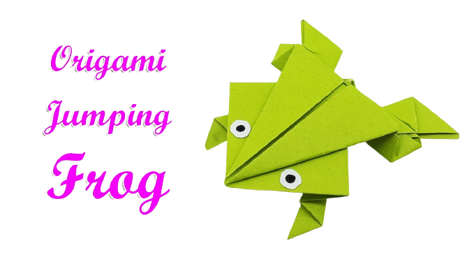
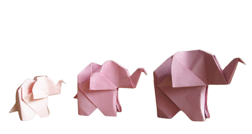
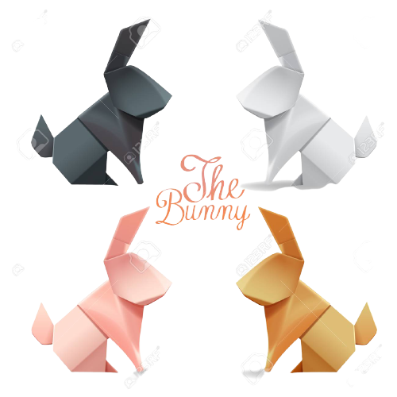

Interesting Facts about Frogs:
- There are over 5,000 species of frog.
- Frogs don't need to drink water as they absorb it through their skin.
- Frogs come in all sorts of colours.

Interesting Facts about Elephants:
- Elephants spend 16 hours per day eating.
- Elephants can live to be 70 years old.
- Elephants are the largest living land animal.
Interesting Facts about Pandas:
- They have great camouflage for their environment
- Their eyes are different to normal bears.
- Pandas are super swimmers! If a panda feels threatened near water, it can use its swimming skills to escape danger.

Interesting Facts about Rabbits:
- A rabbit's teeth never stop growing!
- Rabbits perform an athletic leap, known as a 'binky', when they're happy — performing twists and kicks in mid air!